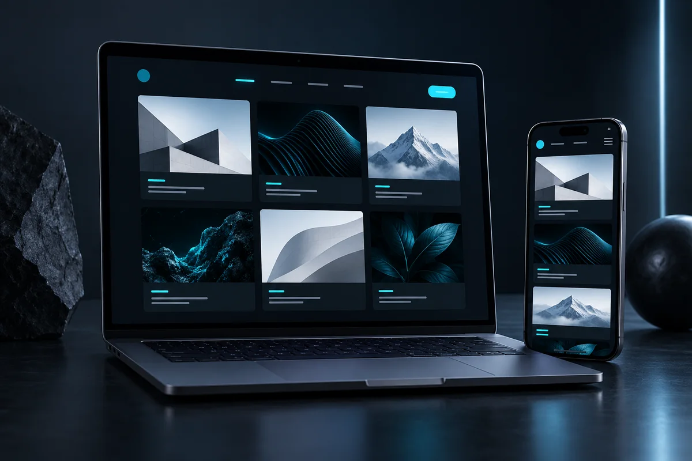

Sample project
Portfolio System
A statically generated portfolio with centralized project data and flexible thematic views.

Preview for Portfolio System is unavailableOne Source, Many Views
All project information is maintained in one central location. The static build uses it to generate the general overview, thematic portfolios, and every individual project page.
Static and Context-Aware
Project links preserve their origin in a URL parameter. The detail page validates this context and returns visitors to the appropriate thematic overview while remaining directly accessible.